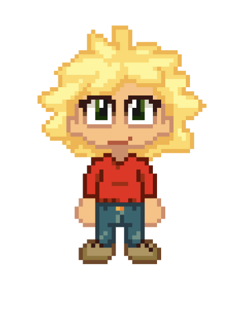
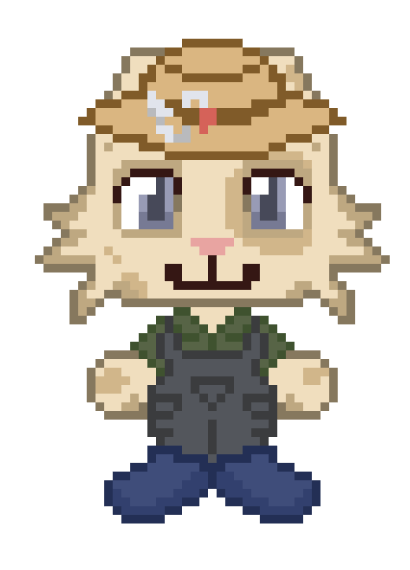
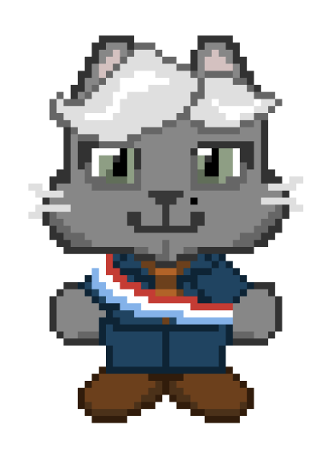
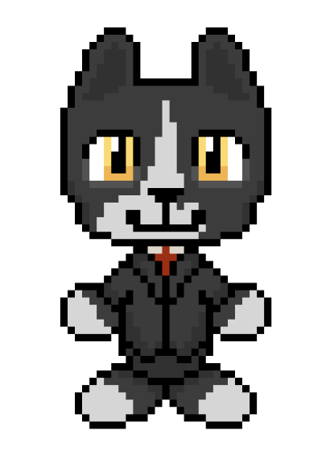
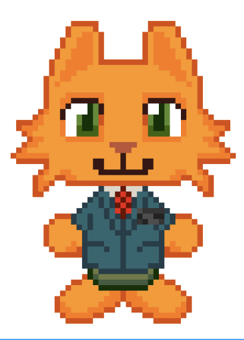
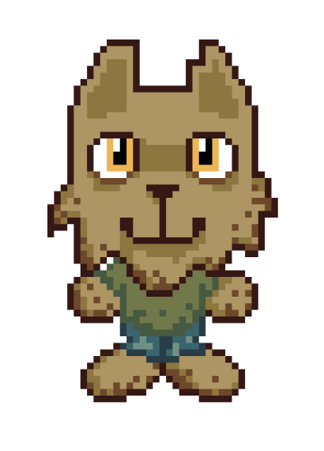
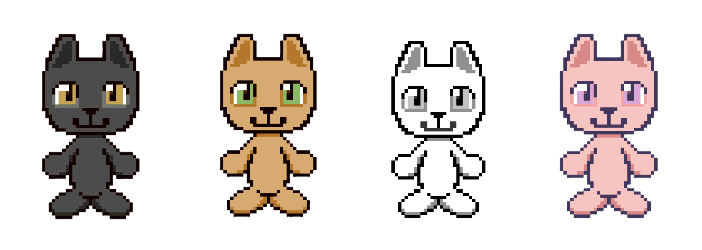

Characters
Main Character

Finn Gill
The player character and protagonist of Fishtopia. Originally from a busy city, Finn had little connection to their family history until receiveing a letter from the Bank of Purradise Island, informing them that their late grandfather's estate would be seized unless claimed in person. With no strong memories of their grandfather, Finn reluctantly travels to Purradise Island. Upon arrival a sudden wave wrecks their boat, stranding them indefinitely. With no way home and no fishing experience, Finn takes over their grandfather's fishing operation, slowly learning the trade under the guidance of a neighbouring fisherman.
Key NPCs

Jimbo
Jimbo is a retired fisherman and Finn's late grandfather's next door neighbour on Purradise Island. A long time friend of Finn's grandfather, Jimbo remembers him with deep affection and respect. Upon Finn's arrival, Jimbo immediately steps in as their mentor, teaching them the fundamentals of fishing. He is one of the most important sources of practical knowledge and personal lore in the game. His relationship with Fin develops steadily throughout the game.

Mayor Whiskers
The jolly mayor of Purradise Island. He is well-meaning and famously easy to win over with a frsh fish delivery. He operates out of the Town Hall and serves as the gatekeeper for new fishing area permits. Players must bring him specific quantities and species of fish in order to unlock access to new fishing regions of the island. Despite his laid-back demenour, Mayor Whiskers genuinely cares about the well being of the Kittizens and is deeply grateful for Finn's contributions to the island's food supply.

Professor Clive
Professor Clive is Purradise Island's school teacher and marine expert. Clive had dedicated his life to cataloguing the fish species in and around the islands waters. Whenever Finn discovers a new species, Professor Clive documents it and provides information about the fish. Player will build a strong relationship with him and unlock additional lore about Purradise Island's history.

Bank Teller
The bank teller is the sole financial officer, working out the only bank on the island. He is responsible for managing Finn's clam account, he handles all deposits and withdraws. Not much is know about him beyond his role.

Mysterious Homeless Cat
A mysterious unnamed character who wanders the island. At the start of the game they appear fearful around Finn, as the player progresses and spends more time on the island, the cat gradually warms up. Appearing in mnew loactions, eventually exchanging a few words and slowly revealing fragments of their past. Their full backstory remains one of the games quieter mysteries.
Kittizens

Kittizens are the humanoid cat residents of Purradise Island, an isolated community that has developed entirely independent from the outside world. Prior to Finn's arrival , the island had been struggling since the loss of Finn's grandfather, whose fishing operation was the backbone of the local food supply. In his absence, the Kittizens were left to rely on chummy, ultra-processed frozen fish sticks distrubited by a big evil coperation. As Finn earns their trust overtime individual kittizens will open up, offering side quests and tasks to complete.